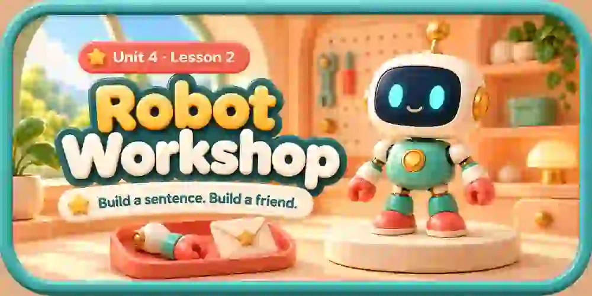

Activity coverThe original6-part robot, workstation, letter and accessories are authored mesh assets. Generated concept/banner/control artwork is kept separately. Source, hashes and model inventory: manifest.